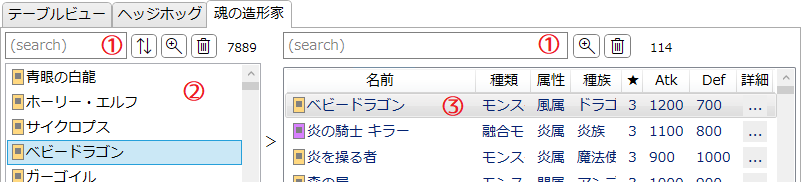

「魂の造形家」タブ
《魂の造形家》が指定する「元々の攻撃力と元々の守備力の合計が同じモンスター」を調べるためのタブです。
説明

-
サーチバー
- リストの内容の絞り込みや並べ替えを行います。
-
テキストボックスに入力してEnterを押すとテキスト検索を適用します。
詳しくは検索ウィンドウ/文字列検索を参照してください。 -
 : ソートウィンドウを開きます。
: ソートウィンドウを開きます。
-
 : 検索ウィンドウを開きます。
: 検索ウィンドウを開きます。
-
 : 絞り込みを解除します。
: 絞り込みを解除します。
- サーチバーの右端には、現在そのリストに表示されている項目の数が表示されます。
-
カードリスト
-
《魂の造形家》の効果でリリース可能なモンスターが一覧されます。
-
「リリース可能なモンスター」とは、以下を除くモンスターです。
- 攻撃力または守備力が「？」のモンスター (合計が計算できないため)
- リンクモンスター (守備力が存在しないため)
-
「リリース可能なモンスター」とは、以下を除くモンスターです。
- 項目を選ぶと、右のリストにそのカードと元々の攻撃力/守備力の合計が同じカードが表示されます。
- Shiftキーを押しながら項目をクリックすると、山括弧《》で囲ったカード名がクリップボードにコピーされます。
-
《魂の造形家》の効果でリリース可能なモンスターが一覧されます。
-
候補リスト
- 左のリストで選択されたカードと元々の攻撃力/守備力の合計が同じカードが一覧されます。
- Shiftキーを押しながら項目をクリックすると、山括弧《》で囲ったカード名がクリップボードにコピーされます。
-
ヘッダー(「名前」などが書かれている部分)をクリックすると、それを基準として項目をソート(並べ替え)します。
- ソートを解除(ID順にソート)したい場合は「詳細」のヘッダーをクリックしてください。